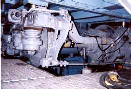

電車
|  | |
電気車の空転再粘着制御
電車の駆動力は動輪とレール間の接線力によって伝達されます。 接線力は，電車の軸上重量と，動輪とレールとの間の接線力係数の関数となっています。 例えば雨や雪が降ったりすると，接線力係数が低下するので動輪が空転を起こしてしまい，モータで発生した力を駆動力として十分に発揮できなくなることがあります。 そこで本研究室では，接線力係数推定器を構成して，その推定値に応じてモータのトルク制御を行う粘着制御を提案し，実際の電車の台車を用いた台車試験と計算機シミュレーションにより有効性を確認しています。
電気車の動輪フラット防止制御
電気鉄道車両が雨天や降雪時に強いブレーキを掛けると，ブレーキ力が粘着力を上回り，動輪が滑走します。 また，滑走が増大して動輪がロックすると，車輪踏面の損傷であるフラットが発生することがあります。 フラットは，騒音や乗り心地の悪化を招き，車両保守の観点からも望ましくありません。 そこで本研究室では，電制と空制の協調ブレーキ制御に着目し，動輪フラットを防止する制御について研究を行っています。 実機実験は，近年導入され始めているIPMSMを搭載した電車を想定し，その駆動システムを模擬した等価実験装置にて行っています。